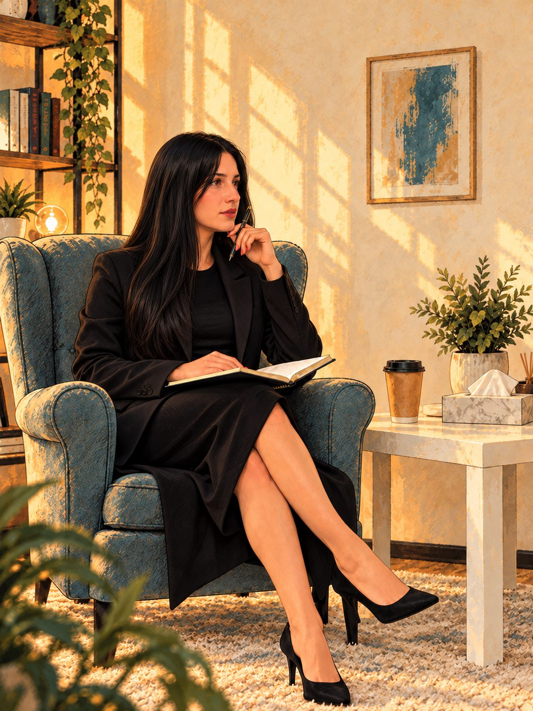
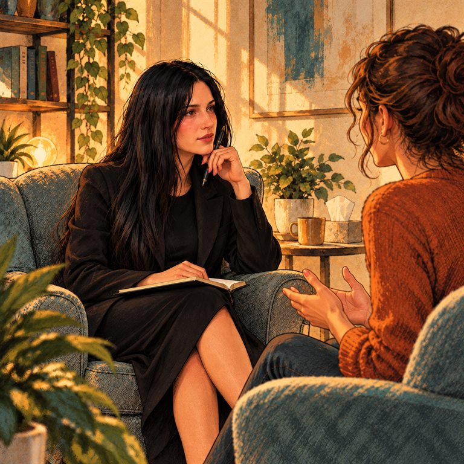
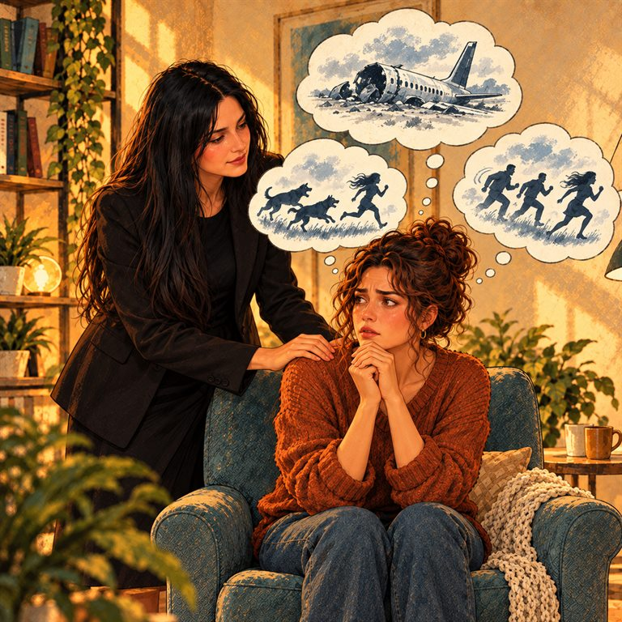
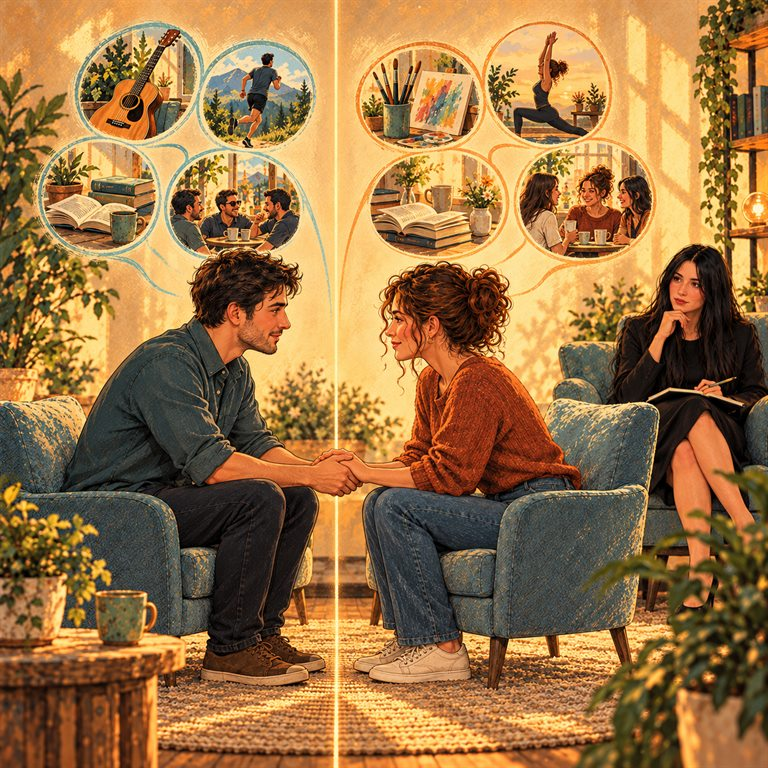

ОБРАЗОВАНИЕ
Знания, изградени в две области
- Магистър по приложна психология — ПУ „Паисий Хилендарски“
- Бакалавър по психология — ПУ „Паисий Хилендарски“
- Педагогическа подготовка по български език, литература и история — ВТУ „Св. св. Кирил и Методий“

ПСИХОЛОГИЯ · РАЗГОВОР · СВЪРЗВАНЕ
Понякога първата стъпка е да си дадеш пространство.
Да спреш, да бъдеш чут и да започнеш разговор.
ПСИХОЛОГИЯТА В ЕЖЕДНЕВИЕТО
Изследвания и идеи за по-добро разбиране на себе си и хората около нас.
Зареждане на последната публикация…
Индивидуална консултация за важните за теб теми: стрес и тревожност, отношения и лични граници. Цената се определя според избрания вид помощ и се показва в EUR при заявката.
Избери тема и час ↗Избери свободен ден и час от актуалния график. Заявката се изпраща за потвърждение от психолога.
Провери свободните часове ↗За последователна работа можеш да избереш предплатен пакет от няколко часа с отстъпка. Актуалните варианти и условия са в страницата с пакетите.
Разгледай пакетите ↗Не е нужно да имаш всички отговори, за да направиш първата стъпка.
Лични въпроси, трудни решения и важни житейски моменти — всяка история има своето начало.
Темите са примерни. Ще ги съобразим с действителните услуги на специалиста.

Лични въпроси, избори и житейски моменти. Продължителността и условията предстои да бъдат уточнени.

Когато напрежението заема все повече място. Продължителността и условията предстои да бъдат уточнени.

Близост, общуване и собствените ти нужди. Продължителността и условията предстои да бъдат уточнени.
Въпроси за следващата крачка и личната посока. Продължителността и условията предстои да бъдат уточнени.
Доверието започва със запознаване.
ПСИХОЛОГ · ПРИЛОЖНА ПСИХОЛОГИЯ
Психолог с подготовка по приложна психология и педагогически опит.
Професионалният ѝ път съчетава психологическо образование и работа в образователна среда. В своята подготовка и практика тя се насочва към подкрепа на деца и родители, семейни отношения и трудни житейски промени.
Темите, с които работи, включват тревожност при деца и юноши, отношенията родител–дете, предизвикателно поведение, раздяла, загуба и травматични преживявания.
ОБРАЗОВАНИЕ
ПРОФЕСИОНАЛЕН ОПИТ
Имам опит в училищна среда като психолог и преподавател. Работата ми с деца, ученици и семейства е основа на професионалния ми подход.
Преминала съм специализирани курсове и имам опит в подкрепата на деца в риск, деца със затруднения в поведението и ученици със специални образователни потребности.
ДОПЪЛНИТЕЛНА ПОДГОТОВКА
Тук ще добавим телефон, имейл, адрес и възможности за онлайн срещи.
Демонстрационна форма — не изпраща и не съхранява данни.